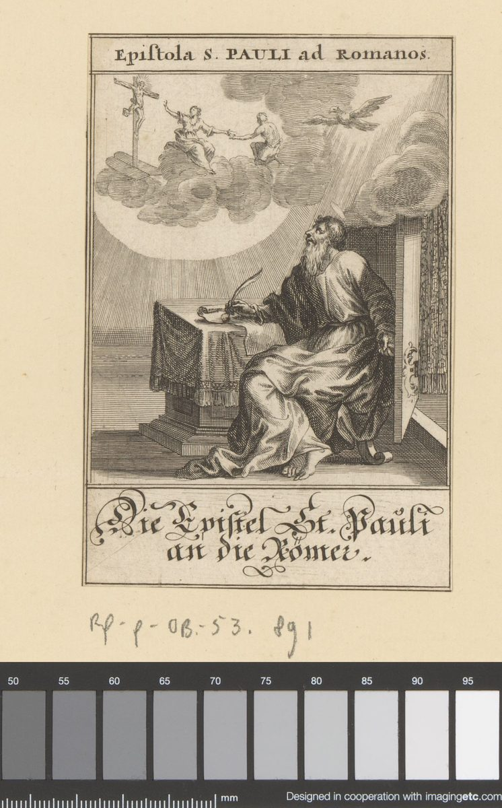

Romans 12 — The Mister Translation

⚠ Romans 12 has no scene to paint, and this plate does not illustrate it. It shows the letter itself being written: Paul at his table with the pen, and above him the vision that the letter’s argument rests on, a crucified Christ, two figures reaching toward each other and a dove in light. The engraving is a devotional frontispiece for the whole letter, and the chapter’s own question, what to do with a body that has been shown mercy, is not answered in the picture. The caption is in German; the plate is from the Rijksmuseum, which holds it under a Creative Commons zero waiver.

Translator’s Notes — verse by verse
Each note explains this translation's choice and compares the seven versions on the shelf. Quotations from copyrighted versions (NIV, TLB, NWT) are kept to short phrases for comparison; KJV, Geneva, Douay-Rheims and ASV are public domain.
“I urge you, then, brothers, by the mercies of God” (Parakalō oun hymas, adelphoi, dia tōn oiktirmōn tou theou, Romans 12:1). The chapter opens on the word the last chapter closed on. Romans 11:32 says God shut all up into disobedience “so that he might show mercy to all,” and the appeal here rests on the plural oiktirmoi, the mercies, of the same God. Paul does not command. He parakalō, appeals, the verb of a request, and the sentence opens the practical half of the letter. The shelf divides on the verb: KJV “I beseech you”, Douay “I beseech you”, NWT 1984 “I entreat YOU”, NIV “I urge you”, and TLB “I plead with you” each choose a different English for the same request.
“a living sacrifice, holy, acceptable to God, your reasonable service” (thysian zōsan hagian euareston tō theō, tēn logikēn latreian hymōn, Romans 12:1). The bodies are the offering, and the offering is zōsa, living, a word that sets it against the dead animals of the temple. The adjective logikos, “reasonable,” stands here and at 1 Peter 2:2 (not yet on these pages): in the New Testament it is an adjective only in these two places. The noun latreia is cultic service or worship. The shelf is the hardest part of the verse: KJV and Douay “reasonable service”, ASV “spiritual service”, Geneva “reasonable serving of God”, NWT 1984 “a sacred service with YOUR power of reason”, and NIV “your true and proper worship.” The NWT keeps the reasoning faculty in the phrase, which the Greek allows and the other versions leave out; this translation keeps the adjective as “reasonable” and leaves the question of which faculty is meant to the reader.
“Do not be shaped by this age” (mē syschēmatizesthe tō aiōni toutō, Romans 12:2). The verb is built on schēma, the outward form, and it stands in two verses of the New Testament: here, and at 1 Peter 1:14, where the readers are told not to be “conformed” to the desires they had in their ignorance. The tense is the present, so the instruction is to stop a habit rather than to avoid a single act. The shelf: KJV “conformed to this world”, ASV “fashioned according to this world”, NWT 1984 “quit being fashioned after this system of things” and the NWT 2013 “stop being molded by this system of things”, NIV “do not conform to the pattern of this world”, and TLB “copy the behavior and customs of this world.” “Shaped” keeps the picture of a form, which “conformed” loses.
“be transformed by the renewing of your mind” (alla metamorphousthe tē anakainōsei tou noos hymōn, Romans 12:2). Metamorphoō is the verb of the transfiguration: Jesus “was transfigured” before Peter, James and John at Matthew 17:2 and Mark 9:2, and the verb stands in four verses of the New Testament, the other one being 2 Corinthians 3:18 (not yet on these pages). The noun for renewal, anakainōsis, occurs here and at Titus 3:5 (not yet on these pages). The “mind” is the nous that chapter 11 quoted in its last question, “who has known the mind of Jehovah?” (11:34), and the answer there is that none had. The shelf: KJV “be ye transformed by the renewing of your mind”, NWT 1984 “be transformed by making YOUR mind over”, NIV “transformed by the renewing of your mind”, and TLB “a new and different person with a fresh newness in all you do and think.” The TLB adds the result; this translation keeps the verb in the passive, as the Greek does.
“so that you may test what the will of God is: the good and acceptable and complete” (eis to dokimazein hymas ti to thelēma tou theou, to agathon kai euareston kai teleion, Romans 12:2). The verb dokimazō is the verb that chapter 1 used when those who “did not approve” God were given over (1:28), and chapter 2 used for the one who “approves the things that excel” (2:18). Here it is the goal of the transformation rather than a verdict. The three adjectives of the will (good, acceptable, complete) are all in the neuter, so they describe the will. The shelf: KJV “prove what is that good, and acceptable, and perfect, will of God”, NWT 1984 “prove to yourselves the good and acceptable and perfect will of God”, NIV “test and approve what God’s will is”, and Geneva “prove what that good, and acceptable and perfect will of God is.” The NIV turns the verb into “test and approve”, which keeps both halves of a word that means both.
“For I say, through the grace given to me” (Legō gar dia tēs charitos tēs dotheisēs moi, Romans 12:3). The “grace” is the one by which Paul was given his apostleship, which he names in 1:5 (“we received grace and apostleship”). It is his office, not a general kindness, and it is why he may speak to the whole congregation in the plural. The verb legō, “I say,” opens the sentence as it opened the questions of chapter 11. The shelf: KJV “through the grace given unto me”, NWT 1984 “through the undeserved kindness given to me”, NIV “by the grace given me”, and Douay “by the grace that is given me.” “Undeserved kindness” is the NWT’s gloss on the word; it is a fair reading of charis and it is not the only one.
“not to think beyond what he ought to think, but to think soundly” (mē hyperphronein par’ ho dei phronein, alla phronein eis to sōphronein). The verb hyperphroneō, “to think beyond,” stands in this verse and nowhere else in the New Testament. Paul then uses phroneō twice more, and the second time he pairs it with sōphroneō, to be of sound mind, the verb of Titus 2:6 (not yet on these pages, the young men to be sound-minded). The English cannot keep the three uses of “think” without repeating itself; this translation says “do not think of yourself beyond what you ought” and “think soundly,” and the note supplies the rest. The shelf: KJV “think soberly”, ASV “think soberly”, NWT 1984 “to have a sound mind”, NIV “with sober judgment”, Douay “to be wise unto sobriety”, and TLB “honest in your estimate of yourselves.”
“each as God has apportioned a measure of faith” (hekastō hōs ho theos emerisen metron pisteōs). The verb merizō, to divide or apportion, is the verb of the division of gifts in verse 6, and the “measure” is what each person has been given. Whether the measure is the amount of faith a person has or the share of a common faith each was given is not settled by the sentence. The shelf: KJV “as God hath dealt to every man the measure of faith”, NWT 1984 “as God has distributed to him a measure of faith”, NIV “in accordance with the faith God has distributed to each of you”, and TLB “measuring your value by how much faith God has given you.” The TLB makes the measure a measure of self-worth, which the Greek does not say.
“just as in one body we have many members” (kathaper gar en heni sōmati polla melē echomen, Romans 12:4). The body picture is not new to the letter. “Members” (melē) are the parts Paul asked his readers to present to God in 6:13, and the “body of Christ” through which the law was put to death in 7:4. Here the body is a congregation, and the verse makes the point the next one makes explicit. The apparatus gives one word-order variant in verse 4: the SBLGNT, Westcott–Hort, Tregelles and Nestle–Aland 28 print polla melē, “many members,” and the Robinson–Pierpont text reads melē polla. The change does not alter the sense. The shelf: KJV “as we have many members in one body”, NWT 1984 “just as we have in one body many members”, NIV “each of us has one body with many members”.
“so we, the many, are one body in Christ, and individually members of one another” (houtōs hoi polloi hen sōma esmen en Christō, to de kath’ heis allēlōn melē, Romans 12:5). The apparatus here is the one note of substance in the pair. The SBLGNT, Westcott–Hort, Tregelles and Nestle–Aland 28 print the article to before kath’ heis, and the Robinson–Pierpont text prints ho, the masculine. The English uses “individually” for either. The phrase “members of one another” has no verb, and the shelf supplies one: KJV “every one members one of another”, NWT 1984 “members belonging individually to one another”, TLB “each needs all the others.” The TLB says what the members do; the Greek only says what they are.
“Having gifts that differ according to the grace given to us” (echontes de charismata kata tēn charin tēn dotheisan hēmin diaphora, Romans 12:6). Charisma, gift, and charis, grace, come from one root, and the sentence is built on the link: the gifts differ because the grace is given. The noun analogia, “proportion,” in “according to the proportion of faith” occurs only here in the New Testament; Hebrews 12:3 (not yet on these pages) uses the verb of the same root, meaning to consider, and that is a different word. The gift of prophecy, which the first clause names, is measured against faith, not against the content of the message. The shelf: KJV “according to the proportion of faith”, Geneva “according to the portion of faith”, Douay “according to the rule of faith”, NWT 1984 “according to the faith proportioned [to us]”, and NIV “in accordance with your faith.”
“or ministry, or the teacher, or the one who exhorts” (eite diakonian … eite ho didaskōn … eite ho parakalōn, Romans 12:7–8). The list has seven items, and the verbs that follow the gifts name the giver: “the one who gives” (ho metadidous), “the one who leads” (ho proistamenos), “the one who shows mercy” (ho eleōn). The two that carry weight here are haplotēs, simplicity, which the Greek word means in its basic sense of single-mindedness and which occurs in seven verses of the New Testament (here, 2 Corinthians 8:2, 9:11, 9:13 and 11:3, Ephesians 6:5, Colossians 3:22, most of them not yet on these pages); and hilarotēs, cheerfulness, which occurs only here. The shelf on simplicity: KJV “with simplicity”, Douay “with simplicity”, NWT 1984 “with liberality”, NIV “if it is giving, then give generously.” The NWT reads the word by its context, the act of giving; this translation keeps the word and lets the note carry the context.
“the one who leads, with diligence; the one who shows mercy, with cheerfulness” (ho proistamenos en spoudē, ho eleōn en hilarotēti, Romans 12:8). The verb proistēmi means to stand before or to preside, and in this verse it is the one who leads. Spoudē, zeal or diligence, is the word that returns in verse 11 (“not lazy in zeal”). Hilarotēs is the only occurrence of the word in the New Testament, and the cheerfulness is in the giving of mercy, not in the mercy itself. The shelf on the leader: KJV “he that ruleth, with diligence”, NWT 1984 “he that presides, [let him do it] in real earnest”, NIV “if it is to lead, do it diligently”, and TLB “If God has given you administrative ability and put you in charge of the work of others, take the responsibility seriously.” The TLB is an interpretation of the phrase, not a rendering, and the note says so.
“Love without hypocrisy” (Hē agapē anypokritos, Romans 12:9). The sentence has no verb: “love, without hypocrisy.” English has to supply one, and the shelf supplies several. Anypokritos, unhypocritical, is the word that stands in six verses of the New Testament: here, 2 Corinthians 6:6 (not yet on these pages), 1 Timothy 1:5, 2 Timothy 1:5, James 3:17 (not yet on these pages) and 1 Peter 1:22, and in most of them it describes a faith or a wisdom, not a love. The shelf: KJV “Let love be without dissimulation”, NWT 1984 “Let [YOUR] love be without hypocrisy”, NIV “Love must be sincere”, and Douay “Let love be without dissimulation.” “Sincere” is a fair reading of the sense, but it gives up the word for the one who acts a part, which is the Greek word.
“Hate what is evil; cling to what is good” (apostygountes to ponēron, kollōmenoi tō agathō, Romans 12:9). Apostygeō, to hate with a shudder, occurs only here in the New Testament. It is a stronger verb than the one in English “dislike,” and the shelf translates it with the word “abhor” in the KJV and NWT and with “hate” in the NIV and TLB; this translation keeps “hate.” Kollaō, to cling or be glued to, is a verb of close joining. The shelf: KJV “Abhor that which is evil; cleave to that which is good”, Geneva “cleave unto that which is good”, TLB “Hate what is wrong. Stand on the side of the good.”
“In brotherly love be affectionate to one another; in honor go before one another” (tē philadelphia eis allēlous philostorgoi, tē timē allēlous proēgoumenoi, Romans 12:10). Philostorgos, affectionate, occurs only here in the New Testament. The root storgē is natural affection, and the chapter’s first list of sins in 1:31 calls the people who lack it astorgoi, without affection. The verb proēgeomai, to go before or to lead the way in a matter, also occurs only here; the phrase “go before one another in honor” competes with “give one another honor first” and the idea of showing deference. The shelf: KJV “Be kindly affectioned one to another with brotherly love; in honour preferring one another”, NWT 1984 “have tender affection for one another. In showing honor to one another take the lead”, NIV “Honor one another above yourselves”, and Geneva “In giving honor, go one before another.”
“Not lazy in zeal; fervent in spirit; serving the Lord” (tē spoudē mē okneroi, tō pneumati zeontes, tō kyriō douleuontes, Romans 12:11). The adjective okneros, lazy or hesitant, is in Matthew 25:26, where the master calls the servant who hid his money “lazy” (Matthew 25:26); here the word sets the zeal of the previous verse against the hesitation it would otherwise invite. Zeō, to boil or be fervent, is the verb of “fervent in spirit,” and the spirit may be the human spirit or the Spirit; the Greek does not say which, and the shelf divides between them. The phrase “serving the Lord” is tō kyriō douleuontes, and the Greek word kyrios here most likely means Christ; the NWT renders it “slave for Jehovah,” which the note records without adopting. The shelf: KJV “Not slothful in business; fervent in spirit; serving the Lord”, NWT 1984 “Do not loiter at YOUR business. Be aglow with the spirit. Slave for Jehovah”, NIV “serving the Lord”, and Douay “In carefulness not slothful. In spirit fervent. Serving the Lord.”
“Rejoicing in hope; enduring in tribulation; persevering in prayer” (tē elpidi chairontes, tē thlipsei hypomenontes, tē proseuchē proskarterountes, Romans 12:12). The triad echoes Romans 5:3–4, where tribulation works out endurance (hypomonē) and endurance proven character and character hope. The verb hypomenō here is the verb of the same endurance, now an instruction rather than a sequence. Proskartereō, to persevere in, is the verb of the steady prayer of the early church (Acts 2:42), and it is the word of a discipline, not of a single request. The shelf: KJV “Rejoicing in hope; patient in tribulation; continuing instant in prayer”, NWT 1984 “Rejoice in the hope. Endure under tribulation. Persevere in prayer”, NIV “Be joyful in hope, patient in affliction, faithful in prayer”, and TLB “Be patient in trouble, and prayerful always.”
“Sharing with the holy ones in their needs; pursuing hospitality” (tais chreiais tōn hagiōn koinōnountes, tēn philoxenian diōkontes, Romans 12:13). “Holy ones” is hagioi, the word Paul uses for the believers throughout the letter. Koinōneō, to share, is the verb of the fellowship of the first church in Acts 2:44. Philoxenia, hospitality, literally the love of strangers, is the word for the welcome a congregation gives to the traveler, and “pursuing” (diōkō) is the same verb used of persecution in the next verse. The shelf: KJV “Distributing to the necessity of saints; given to hospitality”, NWT 1984 “Share with the holy ones according to their needs. Follow the course of hospitality”, NIV “Share with the Lord’s people who are in need. Practice hospitality”.
“Bless those who persecute you; bless and do not curse” (eulogeite tous diōkontas hymas, eulogeite kai mē katarasthe, Romans 12:14). The sentence is Jesus’s. Luke 6:28 has “bless those who curse you” and “pray for those who mistreat you,” and Matthew 5:44 has “pray for those who persecute you.” Paul’s first clause has Luke’s verb, “bless,” and Matthew’s object, “those who persecute you”; “do not curse” echoes the cursing of Luke 6:28. The imperative is in the present, so the instruction is continuous. The shelf: KJV “Bless them which persecute you: bless, and curse not”, NWT 2013 “Keep on blessing those who persecute; bless and do not curse”, NIV “Bless those who persecute you; bless and do not curse”.
“Rejoice with those who rejoice; weep with those who weep” (chairein meta chairontōn, klaiein meta klaiontōn, Romans 12:15). The two infinitives are the grammar of a command, and the shelf translates them as imperatives. The verb “weep” (klaiō) is the verb of the mourners of Jesus in John 11:33. The shelf: KJV “Rejoice with them that do rejoice, and weep with them that weep”, NWT 1984 “Rejoice with people who rejoice; weep with people who weep”, NIV “mourn with those who mourn”.
“Do not set your minds on high things; do not become wise in your own eyes” (mē ta hypsēla phronountes … mē ginesthe phronimoi par’ heautois, Romans 12:16). These two phrases are the echoes of chapter 11. “Do not set your mind on high things” is the warning of 11:20, in the singular, to the nations who might boast over the branches; and “lest you be wise in yourselves” is the purpose of the mystery in 11:25. Here they are plural and general. The shelf: KJV “Mind not high things, but condescend to men of low estate. Be not wise in your own conceits”, NWT 1984 “do not be minding lofty things, but be led along with the lowly things. Do not become discreet in YOUR own eyes”, NIV “Do not be proud, but be willing to associate with people of low position. Do not be conceited.”
“evil for evil” (mēdeni kakon anti kakou apodidontes, Romans 12:17). The sentence is the sharpest form of the rule that the teaching of Jesus gives in Luke and Matthew, and the same phrase is in 1 Thessalonians 5:15 (not yet on these pages). The verb apodidōmi, to pay back or give back, is a commercial word, and Paul uses it in the sense of a debt. The shelf: KJV “Recompense to no man evil for evil”, NWT 1984 “Return evil for evil to no one”, NIV “Do not repay anyone evil for evil”, TLB “Never pay back evil for evil.”
“take thought for what is good before all people” (pronooumenoi kala enōpion pantōn anthrōpōn, Romans 12:17). Pronoeō, to take thought beforehand, is the root of the English “providence,” and it stands in three verses of the New Testament: here, 2 Corinthians 8:21 and 1 Timothy 5:8, the last two not yet on these pages. The phrase “before all people” is the public witness the word is to make. The shelf: KJV “Provide things honest in the sight of all men”, NWT 1984 “Provide fine things in the sight of all men”, NIV “Be careful to do what is right in the eyes of everyone”.
“If it is possible, as far as it depends on you, be at peace with all people” (ei dynaton, to ex hymōn meta pantōn anthrōpōn eirēneuontes, Romans 12:18). The condition is built into the sentence, and Paul does not promise that peace is possible, only that it is the aim as far as the readers can reach. The phrase “as far as it depends on you” is to ex hymōn, a construction the apparatus does not touch. The shelf: KJV “If it be possible, as much as lieth in you, live peaceably with all men”, NWT 1984 “If possible, as far as it depends upon YOU, be peaceable with all men”, NIV “If it is possible, as far as it depends on you, live at peace with everyone.”
“Do not avenge yourselves, beloved, but give place to the wrath” (mē heautous ekdikountes, agapētoi, alla dote topon tē orgē, Romans 12:19). Ekdikeō, to avenge or to vindicate, is the verb of the widow’s plea in Luke 18 and occurs in fifteen verses of the New Testament in its noun and verb forms. The sentence hands the act to someone else by the verb dote topon, “give place,” a phrase used for making room in a crowded place (Ephesians 4:27, “do not give place to the devil,” not yet on these pages). The Greek says “the wrath” without naming whose. The shelf adds the name in some versions: NIV “leave room for God’s wrath” and NWT 1984 “yield place to the wrath” without it; the TLB makes the sentence a plain instruction, “Leave that to God.” The KJV “give place unto wrath” and the Geneva “give place unto wrath” keep the Greek.
“for it is written: Vengeance is mine; I will repay, says Jehovah” (gegraptai gar: Emoi ekdikēsis, egō antapodōsō, legei kyrios). The quotation is of Deuteronomy 32:35, and it does not follow the Greek of that verse as the Rahlfs Septuagint prints it, which reads “in the day of vengeance I will repay.” The Hebrew has lî naqām wĕšillēm, “to me vengeance and repayment,” and Paul’s first clause matches the Hebrew more closely than the Greek. The second clause, “I will repay,” matches the Septuagint. The word kyrios stands in the quotation for the one who speaks, and in the Hebrew that is Jehovah; this translation keeps the name where the quoted verse has it, and the note says that the Greek reads kyrios. The NWT 1984 and the NWT 2013 print “says Jehovah”; the NIV prints “says the Lord”; the KJV, ASV and Geneva print “saith the Lord.” Hebrews 10:30, which quotes the same sentence, is not yet on these pages.
“But if your enemy is hungry, feed him; if he is thirsty, give him something to drink” (alla ean peinā ho echthros sou, psōmize auton; ean dipsā, potize auton, Romans 12:20). The sentence is a quotation of Proverbs 25:21–22 (not yet on these pages), and the Septuagint has the same words, with the same verbs for feeding and giving drink (psōmizō, potizō). The Hebrew of the proverb has the same two conditions and the same imperatives. The word “enemy” is echthros in both, and the Greek is singular, which makes the quotation one person’s duty and the verse therefore changes its grammar from the plural of verses 1–19. The apparatus gives the opening word of the verse: the SBLGNT, Westcott–Hort, Tregelles and Nestle–Aland print alla ean, “but if,” and the Robinson–Pierpont text prints Ean oun, “if then,” so that the verse begins as a continuation in one tradition and as a new sentence in the other. The shelf: KJV “Therefore if thine enemy hunger, feed him; if he thirst, give him drink”, NWT 1984 “if your enemy is hungry, feed him; if he is thirsty, give him something to drink; for by doing this you will heap fiery coals upon his head.” NIV “If your enemy is hungry, feed him; if he is thirsty, give him something to drink. In doing this, you will heap burning coals on his head,” after an opening “On the contrary.”
“for by doing this you will heap coals of fire on his head” (touto gar poiōn anthrakas pyros sōreuseis epi tēn kephalēn autou, Romans 12:20). The noun anthrax, a coal, occurs here in the New Testament; the charcoal fire of John 18:18 and 21:9 is a diminutive, anthrakia. The Hebrew says gĕḥālîm, glowing coals, and it goes on to a last clause that Paul does not quote: “and Jehovah will repay you.” The reader is left to decide whether the coals are a judgment, a shame, or a change of heart. The shelf reads the image in different ways: KJV “thou shalt heap coals of fire on his head”, NWT 1984 “heap fiery coals upon his head”, TLB “you will be heaping coals of fire on his head. In other words, he will feel ashamed of himself”, and NVI “Actuando así, harás que se avergüence de su conducta”, which chooses the second reading outright. This translation keeps the image.
“Do not be overcome by evil, but overcome evil with good” (mē nikō hypo tou kakou, alla nika en tō agathō to kakon, Romans 12:21). The verb nikaō, to conquer, is the verb of the chapter’s last sentence, and it returns the victory language of 8:37, where “we conquer overwhelmingly through the one who loved us.” The first verb is a present imperative and the second an aorist imperative, both active in form, so the verse says both that the reader must not keep being beaten and that the reader must win, once and for all, with the good. The Greek is singular, as in verse 20, and the shelf translates it accordingly: KJV “Be not overcome of evil, but overcome evil with good”, NWT 1984 “Do not let yourself be conquered by the evil, but keep conquering the evil with the good”, NIV “Do not be overcome by evil, but overcome evil with good”, and TLB “Don’t let evil get the upper hand, but conquer evil by doing good.”
Patterns worth carrying forward
Where this translation keeps the words exact / distinct: “mercies” for oiktirmoi (v. 1), the plural of 11:32; “reasonable service” for logikē latreia (v. 1); “shaped” for syschēmatizō and “transformed” for metamorphoō (v. 2), kept apart as the shelf does not; “test” for dokimazō (v. 2), as at 2:18; “think soundly” for sōphroneō (v. 3); “apportioned” for merizō (v. 3); “members” for melē (vv. 4–5), as at 6:13; “prophecy”, “ministry”, “exhorts”, “simplicity”, “leads”, “cheerfulness” for the seven gifts of vv. 6–8; “without hypocrisy” for anypokritos (v. 9); “hate” for apostygeō (v. 9); “affectionate” for philostorgos and “go before” for proēgeomai (v. 10); “lazy” for okneros (v. 11), as at Matthew 25:26; “zeal” for spoudē (vv. 8, 11); “enduring” for hypomenō (v. 12), as at 5:4; “persevering” for proskartereō (v. 12); “bless” for eulogeō (v. 14); “wise in your own eyes” for phronimos par’ heautois (v. 16), as at 11:25; “repay” for apodidōmi (v. 17); “take thought” for pronoeō (v. 17); “avenge” for ekdikeō and “wrath” for orgē (v. 19); “coals of fire” for anthrax (v. 20); and “overcome” for nikaō (v. 21), as at 8:37. Two pairs are split on purpose: syschēmatizō and metamorphoō, and sōphroneō and phroneō, which the English cannot both keep and which the note shows side by side.
Echoes paid. “The mercies of God” (11:32) — v. 1. “The mind of Jehovah” (11:34) — v. 2. “Approve” (1:28, 2:18) — v. 2. “Grace and apostleship” (1:5) — v. 3. “The body of Christ” (7:4) and members (6:13) — vv. 4–5. Tribulation and endurance (5:3–4) — v. 12. “High things” (11:20) and “wise in yourselves” (11:25) — v. 16. “Without affection” (1:31) — v. 10. “Conquer” (8:37) — v. 21.
Echoes planted. “Give place to the wrath” (v. 19) at Romans 13:4 (now on these pages), where the authority is “an avenger for wrath” (ekdikos eis orgēn); “Love is the fulfilling of the law” (v. 9) at Romans 13:8–10 (now on these pages), where the sentence “owe no one anything, except to love one another” takes up the love of verse 9; the one who “shows mercy” and “gives” (v. 8) at Romans 13:6–7 (now on these pages), where the taxes and the honor are owed.
Next in this book: Romans 13 is now on these pages — it opens “Let every soul be subject to the governing authorities” (13:1; Greek checked).